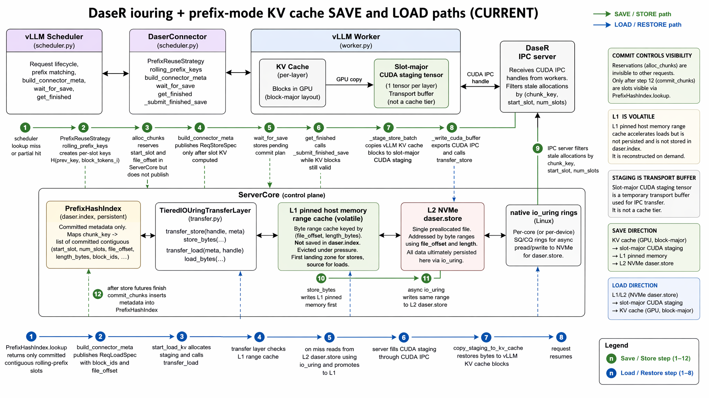

DaseR iouring + prefix save/load 路径
这节课只抓一件事：在 prefix 模式下，KV bytes 如何在 vLLM KV cache、worker staging、server iouring L1/L2、prefix index 之间移动。
先定方向：save/store 是 KV cache -> staging -> L1 -> L2 -> commit；load/restore 是 L1/L2 -> staging -> KV cache。commit 只发布 metadata，不搬 bytes。

1. Prefix 模式先把 prompt 切成 slot
PrefixHashIndex 不是按整段 prompt 一次性复用。它按 vLLM block size 对齐，每个完整 block 生成一个 chained rolling-prefix key：
key_0 = seed
key_1 = H(key_0, tokens[0:block_tokens])
key_2 = H(key_1, tokens[block_tokens:2*block_tokens])
...所以 prefix mode 的 save 粒度是 slot。一个 prompt 有 4 个完整 slots，就可能产生 req:store:0 到 req:store:3 这类 synthetic store ids。
2. Save: scheduler 只决定“要存哪里”
Lookup miss / partial hit
get_num_new_matched_tokens() 查询 server。miss 时，reuse strategy 建一个 PendingStore，记住目标 token_count、起始 slot 和 rolling key。
Block IDs 到位后分配
update_state_after_alloc() 拿到 vLLM KV block IDs。prefix strategy 对每个缺失 slot 调 alloc_chunks()，server 返回 start_slot、file_offset。
只发布已计算 slot
build_connector_meta() 只有在 computed_tokens >= required_tokens 时才把 ReqStoreSpec 交给 worker。
3. Save: worker 在 request finished 时一次性 snapshot
master 当前代码里，save_kv_layer() 不再逐层提交保存；它基本只确认当前 step 有 store metadata。真正的数据 snapshot 发生在 get_finished() 里，因为那时请求已完成，但 vLLM 还没释放 KV blocks。
wait_for_save() 把 ReqStoreSpec 和待 commit keys 挂到 _pending_finished_saves。get_finished() 看到 finished req 后调用 _submit_finished_save()。build_staging_store_batches() 按 staging byte 上限分批，span 记录 source_offset -> file_offset。_stage_store_batch() 把 vLLM KV cache 的 block KV 复制进 slot-major CUDA staging。_write_cuda_buffer() 等 CUDA event，导出 CUDA IPC handle，把 spans 发给 server transfer_store。4. Save: server iouring 先写 L1，再异步落 L2
IPC server 收到 transfer_store 后先做 stale allocation 过滤：如果 chunk 的 start_slot/num_slots 已经不是当前 allocation，就跳过这个 span。活着的 span 进入 TieredIOUringTransferLayer.store_bytes_grouped()。
store_bytes() 从 CUDA IPC buffer slice 复制到 pinned host memory slice，并放进 L1 range cache。这个时刻后，load 可以从 L1 命中。L2IoEngine.write() 通过 native io_uring 写 daser.store。commit_chunks()。ServerCore.commit_chunk() 插入 PrefixHashIndex。5. Load: 只读 committed prefix
load 的前提是 chunk 已 commit。PrefixHashIndex.lookup() 从 prompt 开头按 rolling keys 查，遇到第一个 miss 就停。scheduler 把命中的 token window 修剪到本次 vLLM external prefix 能接收的范围，然后发布 ReqLoadSpec。
start_load_kv() 为本 step 的 loads 建 staging read plan。transfer_load。TieredIOUringTransferLayer.load_bytes_grouped() 先解析 L1 resident ranges；miss ranges 从 L2 读入 pinned memory 并 promote 回 L1。copy_staging_to_kv_cache() 把 slot-major staging 写回 vLLM KV blocks。pos_offset 或量化 scale，load copy 阶段应用 RoPE delta / scale。最容易记错的 3 点
- staging 是传输缓冲，不是 cache tier。cache tier 是 server 内的 L1 pinned memory 和 L2
daser.store。 - alloc 不是 commit。
alloc_chunks()只预留 metadata；commit_chunks()后 prefix lookup 才能命中。 - save 的 snapshot 不在每层 hook 里完成。当前 master 把实际 KV -> staging 延迟到 request finished 时。
30 秒自测
一个 prefix slot 已经写进 L1，但还没 commit。下一次 prefix lookup 会命中吗？
save 路径里 staging 的下一站是什么？
继续复习
速查版在 DaseR iouring + prefix save/load 速查。主源码入口：daser/connector/scheduler.py、daser/connector/worker.py、daser/transfer/iouring/layer.py。